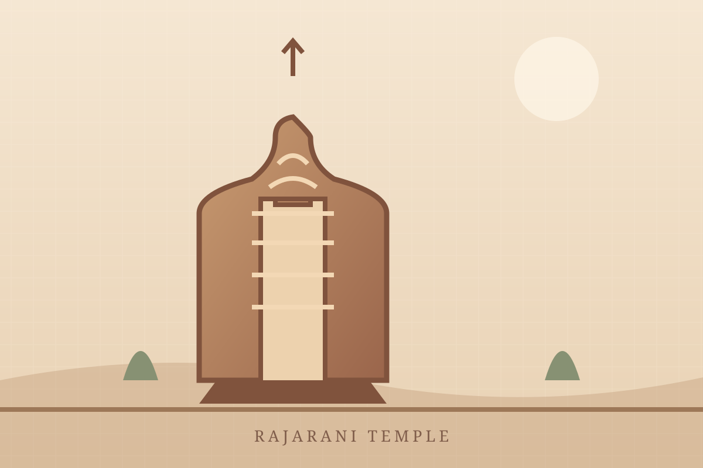
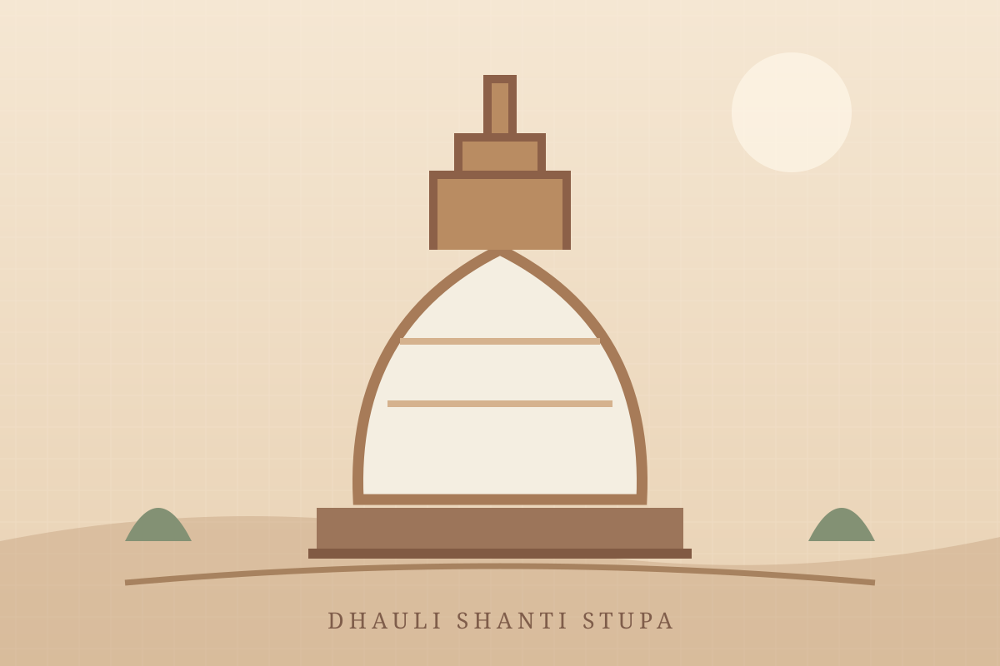
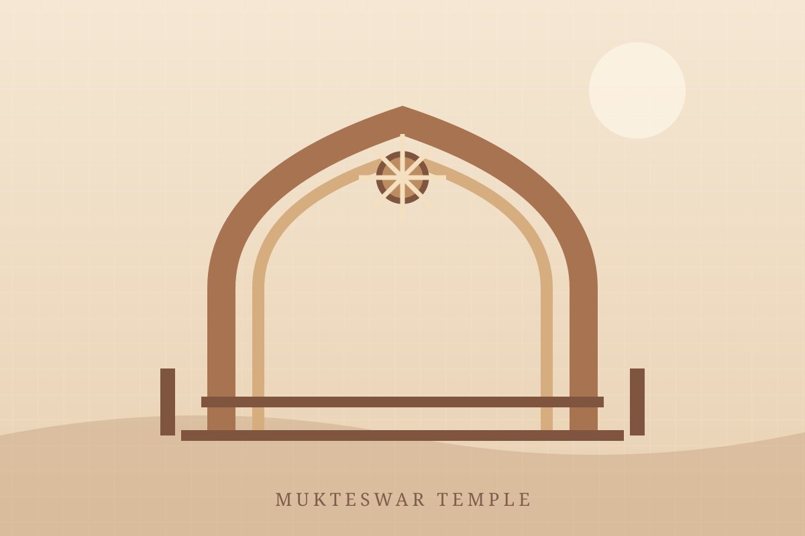
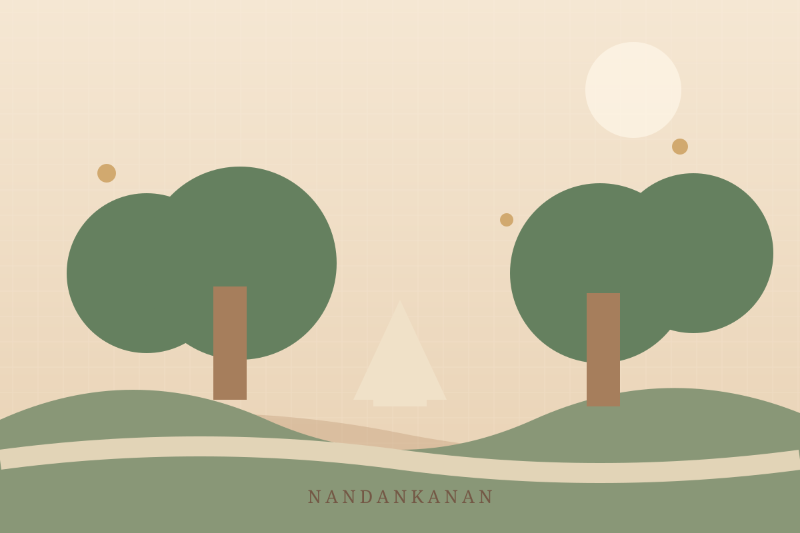
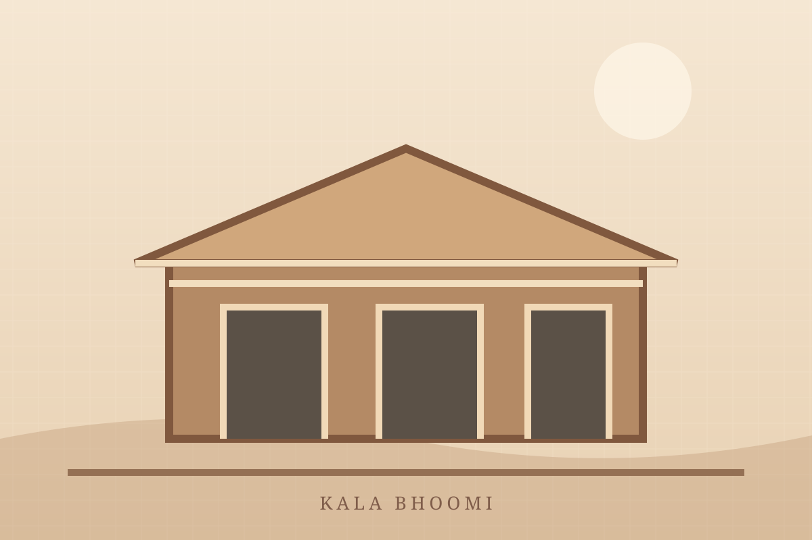

Itishree
Daughter of
Smt. Sipra Sundarray& Sri Bhramarbar Sundarray
Sundarray Family, Friends & Relatives
A CELEBRATION IN THE CITY OF TEMPLES
With the blessings of our families
Two hearts, one beautiful beginning.
7:30 PM onwards · The Regal Palm, Bhubaneswar
Where her story begins · Old Town, Bhubaneswar
TWO FAMILIES · ONE NEW CHAPTER
We warmly invite you to celebrate the wedding of our children.
Daughter of
Smt. Sipra SundarraySundarray Family, Friends & Relatives
Son of
Smt. Kaushalya BeheraBehera Family, Friends & Relatives
THREE GATHERINGS · A LIFETIME OF MEMORIES
We look forward to sharing these special moments with you.
THE GREEN GALA
Let the hues of mehendi narrate the story of love and celebration!
Get directions ↗THE YELLOW AFFAIR
A splash of turmeric, a burst of laughter, and the glow of happily ever after!
Get directions ↗PETALS & PROMISES
With hearts full of love, let's gather to witness the beginning of their forever.
Get directions ↗A CITY THAT HOLDS HER ROOTS
Known as the City of Temples, Bhubaneswar is a place where ancient stone, quiet courtyards and a living modern city meet.
EKAMRA KSHETRA · OLD TOWN
From the sacred lanes around Lingaraj Temple and Bindu Sagar to the old neighbourhood of Gouri Nagar, Old Town is a meaningful part of Itishree's home story.
Explore Old Town ↗The spiritual heart of Ekamra Kshetra and an enduring landmark of Kalinga architecture.
View map ↗

A landmark associated with the Kalinga War and Emperor Ashoka's transformation.
View map ↗
Ancient rock-cut caves and inscriptions that open a window into the region's past.
View map ↗
Celebrated for its ornate torana gateway and refined temple design.
View map ↗
A much-loved zoological and botanical destination on the city's edge.
View map ↗
A historic temple near Bindu Sagar in the Old Town precinct.
View map ↗
A contemporary museum celebrating Odisha's craft traditions and makers.
View map ↗Landmark selection follows Odisha Tourism's Bhubaneswar destination guide. Check local opening hours and access rules before visiting.
PLAN YOUR JOURNEY
We look forward to welcoming you to the city.
BY AIR
Code: BBI · The city's main airport, with road connections to Old Town and the wedding venue.
Airport map ↗BY RAIL
The principal railway station serving the city, with onward taxi and app-cab options.
Station map ↗BY ROAD
Intercity buses and road links connect Bhubaneswar with Cuttack, Puri and other destinations.
Baramunda bus stand map ↗For event-day travel, allow extra time for city traffic and confirm your route with your cab or driver. Venue map links are included with each event above.
WE WOULD LOVE TO SEE YOU
Sunday · 13 December 2026
The Regal Palm · Bhubaneswar
RSVP on WhatsApp